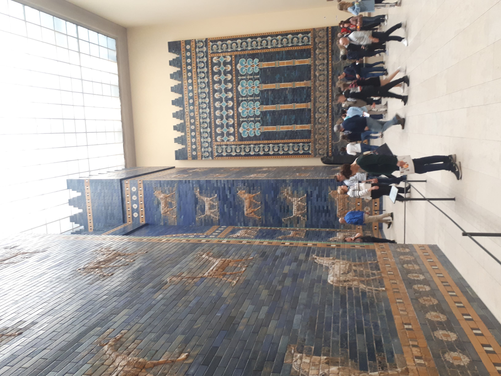

Ishtar Gate of Babylon

- Find Name
- Ishtar Gate of Babylon
- Historical Period
- Neo-Babylonian Period (626-539 BC)
- Artifact Date
- c. 575 BC (reign of Nebuchadnezzar II)
- Date Discovered
- 1902–1914 (excavated)
- Discovery Location
- Babylon, Iraq
- Current Location
- Pergamon Museum, Berlin (reconstructed)
- Timeline Era
- Exile
- Description
- The great glazed-brick gate of Nebuchadnezzar's Babylon, its blue walls decorated with bulls and serpent-dragons, excavated by Robert Koldewey and reconstructed in Berlin. It was one of eight gates in the inner city wall, opening onto the Processional Way.
- Biblical Significance
- This is the Babylon of Daniel's day made visible: the city Nebuchadnezzar boasted he had built by his mighty power. Walking through its gate in reconstruction, a reader can picture the splendour that made exile feel permanent — and the God who humbled its king.
- Evidence Class
- Contextual
- Interpretations
- Scholars agree the gate is Nebuchadnezzar's work of about 575 BC; the reconstruction in Berlin reassembles excavated bricks, with some modern brick completing the structure.
- Scripture Illuminated
- Related People
- Related Books
- Related Places
Awaiting Review Not yet checked against scholarly sources. Treat its claims as provisional until this entry is reviewed. About verification
Last reviewed: not yet reviewed